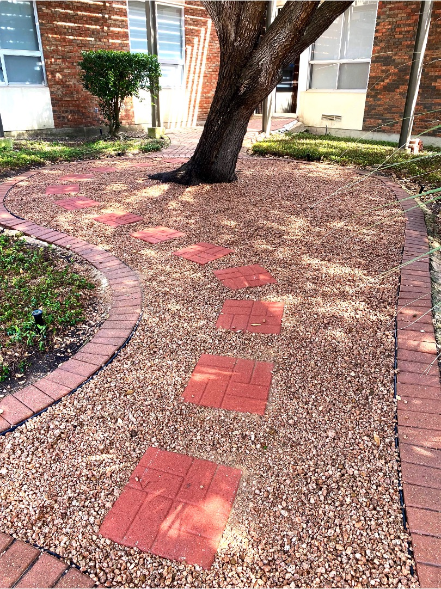
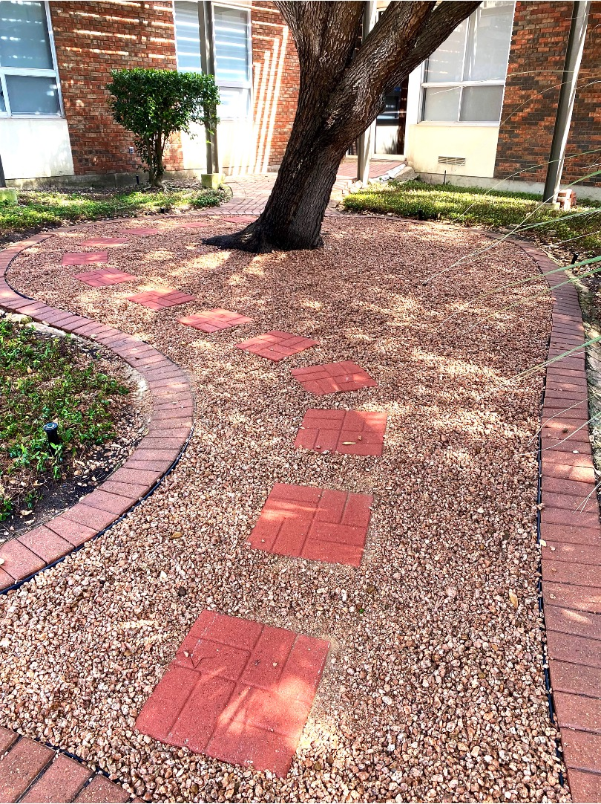

About Francisco's Landscaping
Francisco's Landscaping has been shaping outdoor spaces since 2017. With a rich history spanning 6 years, we've proudly served our community with a commitment to excellence and a passion for creating stunning landscapes.
Our dedicated team of professionals, led by founder Francisco, combines creativity and expertise to bring your landscaping dreams to life. From concept to completion, we work closely with our clients to craft outdoor environments that reflect their unique style and preferences.
We offer a comprehensive range of landscaping services, including Lawn Mowing & Maintenance, Tree trimming, Irrigation, Flower beds,Pressure washer, and more. Our focus on sustainable practices ensures that your landscape not only looks beautiful but also respects the environment.
At Francisco's Landscaping, we take pride in our reputation for delivering top-quality workmanship, attention to detail, and personalized service. Your satisfaction is our priority, and we strive to exceed your expectations at every step of the journey.
Discover the transformative power of exceptional landscaping. Contact us today to schedule a consultation and begin the journey toward enhancing your outdoor living space with Francisco's Landscaping.
Call us today At
or
Get a QuoteOur Work
 
